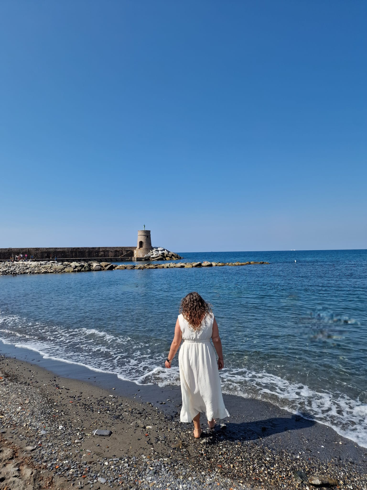
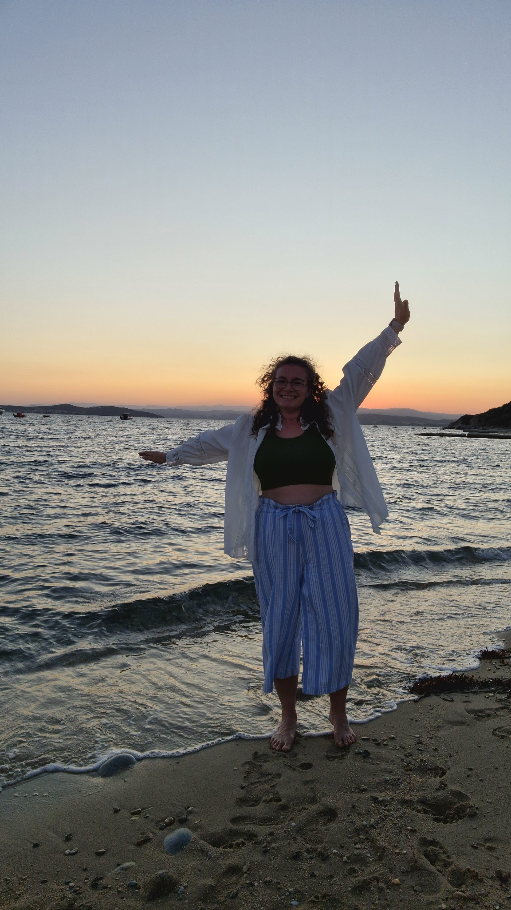

“An experience filled with powerful insights and self-awareness. I felt safe, engaged and supported, and I discovered new ways of cultivating the mindset I need.”Livia

The Freedom Within
Remember who you are.
Start living like it.
A 4-week guided journey that turns insight into the way you actually live.
Choose the journey that fits you
G
4-Week Small Group Journey
Transform alongside a small group of like-minded women in a safe, supportive space.
- 4 live group sessions
- Small group, up to 10 women
- WhatsApp support
- Reflection exercises and practices
Price to be confirmed
Join the interest list →1:1
4-Week Private Journey
The same framework with personalised guidance and deeper support.
- 4 private sessions
- Personalised approach
- Flexible scheduling
- Voice support between sessions
Price to be confirmed
Book a 30-minute call →You don’t need another version of yourself.
You need enough space to hear the one that is already there.
For years you have been adapting, being responsible, and holding everything together while knowing something needs to change.
The Freedom Within is about remembering who you were before fear, expectations and survival became louder than your own voice.
The Four Shifts
Week 1
See yourself clearly
Reconnect with your story and recognise the beliefs, roles and patterns shaping your life today.
Week 2
Release what no longer belongs to you
Meet the parts of yourself that learned to protect you and gently create more space inside.
Week 3
Remember who you are
Reconnect with your values, strengths and direction. Discover what genuinely feels like yours.
Week 4
Live differently
Turn insight into aligned action and leave with a realistic path that feels sustainable.
You might be here if...
You keep putting yourself last.
You know something has to change, but do not know where to begin.
You have built a life that looks successful, yet does not quite feel like yours.
You are tired of understanding yourself and ready to actually live differently.
How we work together
Every session combines conversation with embodied practices.
Sometimes we explore your story. Sometimes we work with your nervous system. Sometimes we use visualisation, reflective coaching, somatic awareness or creative exercises.
I follow you, not a script.

From insight to movement
“A space to connect with yourself and discover a fresh perspective on what truly matters to you.”Flavius
“I felt gently guided and fully supported throughout the process, in a space where it was safe to explore and grow.”Paula
Video testimonials can be added here when ready.